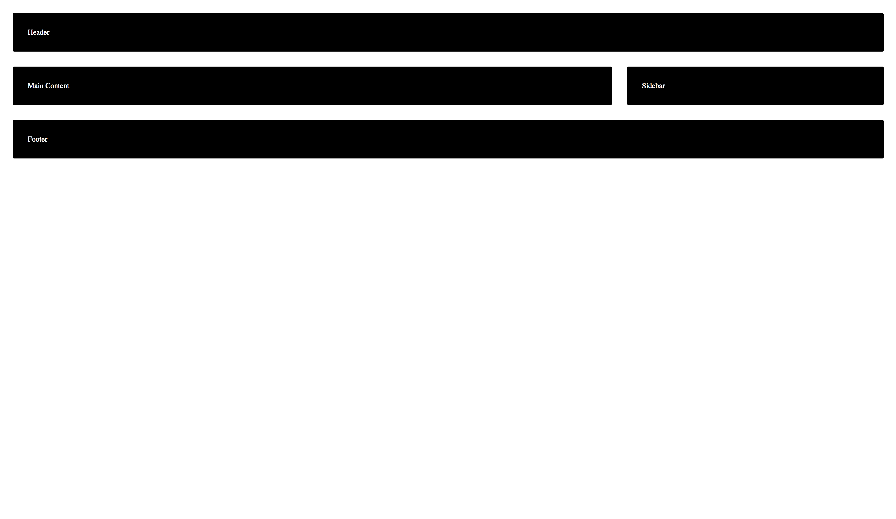
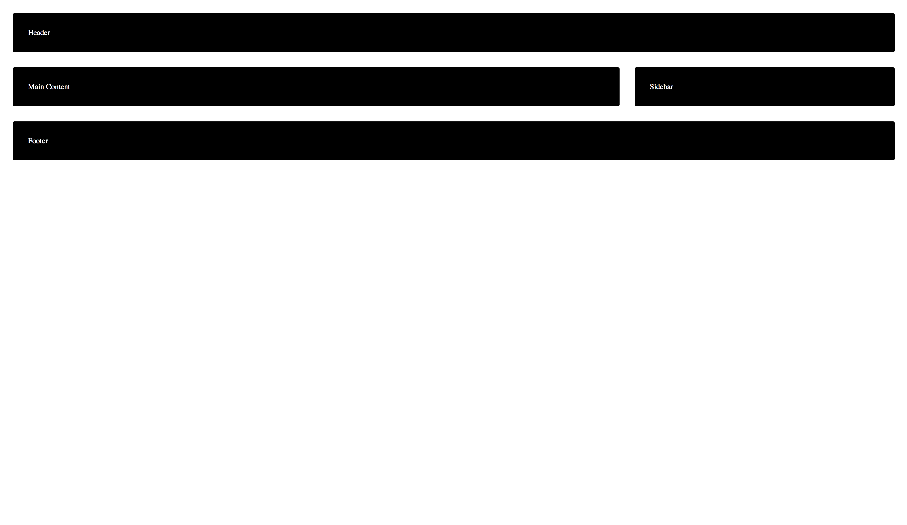

04 - Redefining grid with Media Queries
Requirements
Problems for in-class lab for the “CSS Advanced” course @ SoftUni.
Tasks
- Copy the code from Using Grid Named areas - exercise 3
- Redefine the grid using Media Queries when the screen has 1024px width
Screenshot
 
